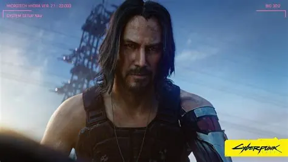

WELCOME TO NIGHT CITY

Antiguo líder de Samurai y enemigo de Arasaka.
VER HISTORIA ▼Johnny Silverhand fue un antiguo militar y músico que se convirtió en una figura importante de Night City. Lideró la banda Samurai y desarrolló un profundo enfrentamiento con la corporación Arasaka.